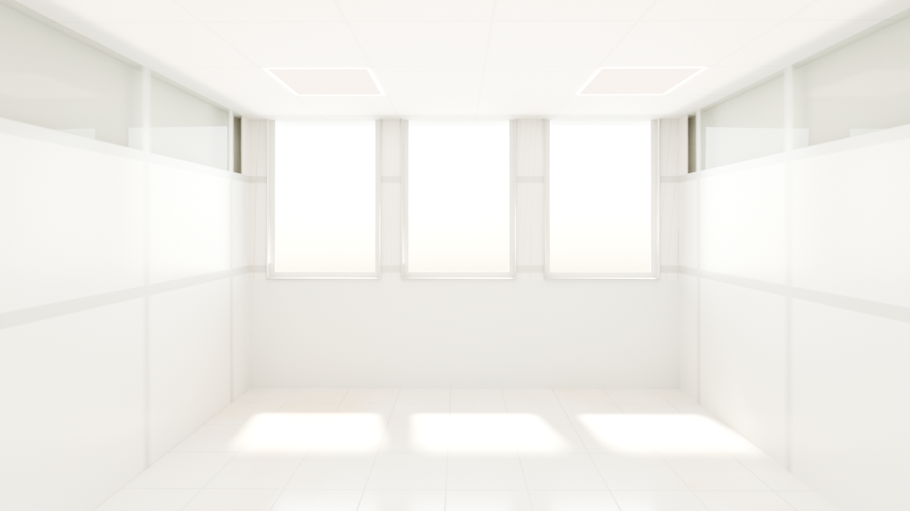
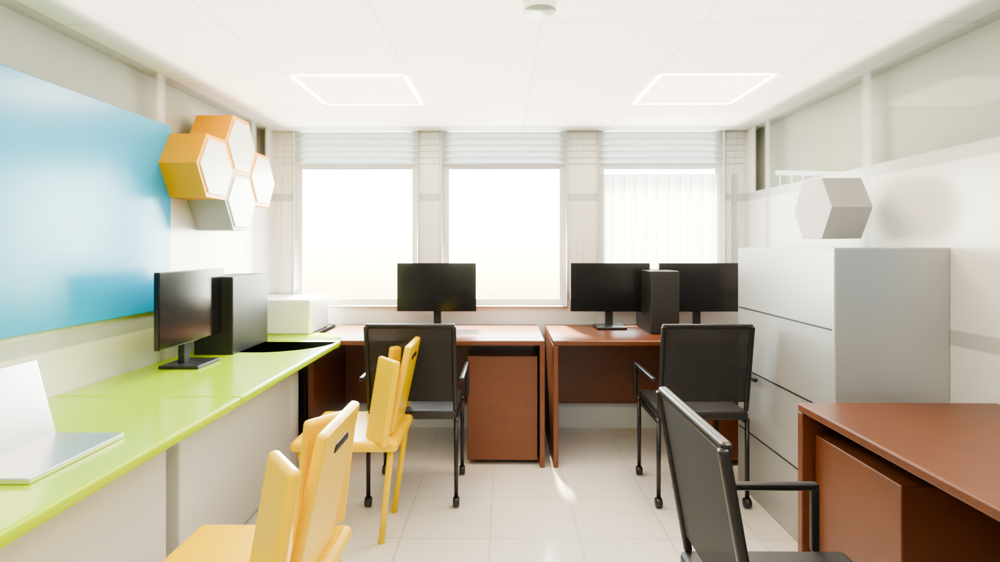
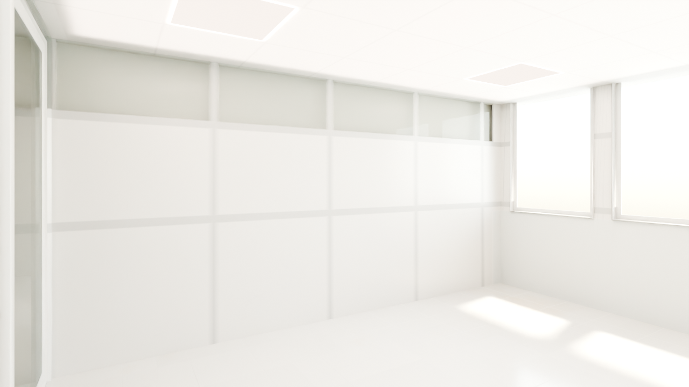
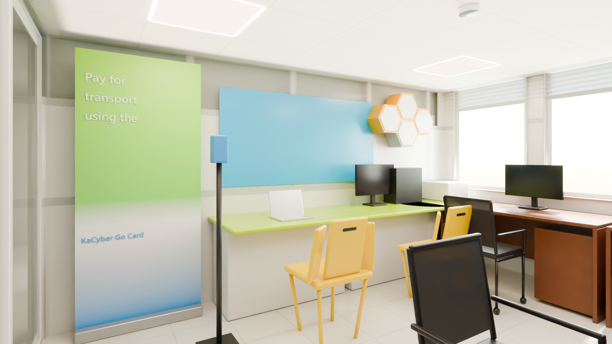
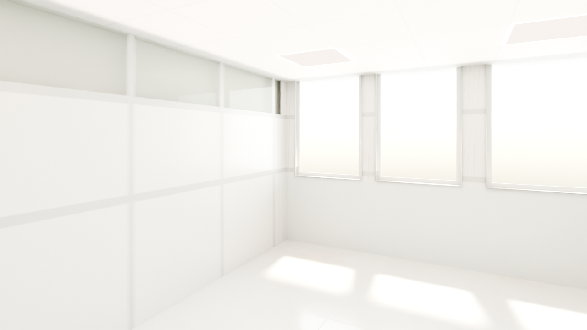
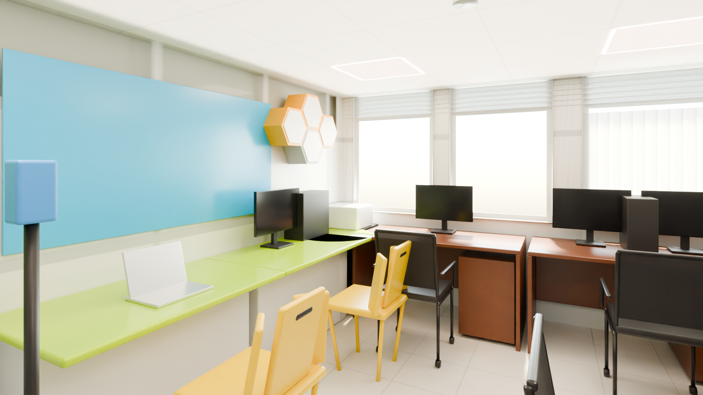

KaCyber — National ICT Innovation Hub
Ground floor, top row between Visual Space and Smart Ideas, directly north of the IoT Lab. Window wall to the north, glazed corridor screen with an open 1.23 m doorway to the south. Furniture at real scale; what does not fit is listed below.
Zone: X -15.43..-11.93, Y +3.35..+7.82 (clear 3.40 x 4.31 m), ceiling soffit 2.14 m. Each angle: the reference photo, the shell (model with materials and light only) and the furnished scene. The original meshes are untouched; no render contains people.
2 draft4 final
Looking north at the window wall
photo Hub Space-35.jpgFrom the south end: the lime counter and banner on the left, the mahogany desks at the window, the east desk and cabinet on the right.
 Photo Hub Space-35.jpg
Photo Hub Space-35.jpg
Shell
Furnished
The counter wall
photo Hub Space-37.jpgLooking west: the blue board, the KaCyber Go Card banner, the hexagon shelves and the lime counter with its yellow chairs.
 Photo Hub Space-37.jpg
Photo Hub Space-37.jpg
Shelldraft
Furnished
From the doorway (no matching photo)
photo no matching photoAn extra view from just inside the doorway, diagonally toward the counter and the window. There is no reference photo for this angle.

Shelldraft
FurnishedWhat differs from the photos (ranked)
- Not reviewed yet.
Dropped at real scale
| Item | Why |
|---|---|
| Middle double-desk block (second desk + 2 chairs) | back to back with chairs both sides it needs 2.6 m; 2.0 m is free between the counter chairs and the east desk |
| Round table (Ø 1.2 m) + grey chair | it would overlap the counter chairs and the east desk chair |
| Third yellow chair | no room left at the 2.4 m counter |
| Coat stand | the north-east corner is taken by the window desk and the tall cabinet |
| Split AC unit above the window | the window glass runs above the 2.14 m soffit, there is no wall above it in the model |
| Curtain on the window | vertical blinds only |
Free camera
Walk the photoreal KaCyber (baked, free camera) →
Files and last updated
| File | Kind | Size | Modified |
|---|---|---|---|
| 01_window_north_furnished.png | final | 1.4 MB | 2026-10-02 02:58 |
| 01_window_north_shell.png | final | 1.0 MB | 2026-10-02 03:38 |
| 02_counter_west_furnished.png | final | 1.4 MB | 2026-10-02 03:09 |
| 02_counter_west_shell.png | DRAFT | 730.6 KB | 2026-10-02 02:31 |
| 03_from_doorway_furnished.png | final | 1.3 MB | 2026-10-02 03:21 |
| 03_from_doorway_shell.png | DRAFT | 666.0 KB | 2026-10-02 02:32 |
| sbs_01_window_north.png | side-by-side | 1.8 MB | 2026-10-02 03:12 |
| sbs_02_counter_west.png | side-by-side | 1.8 MB | 2026-10-02 03:12 |
| tour/index.html | free-camera page | 15.2 KB | 2026-10-02 03:56 |
| walk/index.html | free-camera page | 26.6 KB | 2026-10-02 02:18 |
| walkbaked/index.html | free-camera page | 45.4 KB | 2026-10-02 03:56 |
Render settings
- Room
- KaCyber - X -15.43..-11.93, Y +3.35..+7.82, soffit 2.14 m
- Renderer
- Blender 4.2 LTS, Cycles, CPU only (i5-10505)
- Draft settings
- 1280 x 720, 32 samples, adaptive 0.012, OIDN (finals 1600 x 900, 256 samples)
- Daylight
- North glazing - 12 x 6 m soft panel 4 m out (6500 W), sky strength 2.2; louvre band, blinds on the east panes
- Ceiling lights
- 4 LED panels 600 x 600, 5000 K, plus a soft ceiling fill
- Tone mapping
- AgX, Medium High Contrast, exposure -0.22 (same as the other rooms)
- Furniture
- Real scale, nothing shrunk
- People
- None, by design